Published: Jan 8, 2007
The steering column switches comprise the steering column multifunction switch and the ignition switch. Both switches are located on the steering column assembly.
The steering column multifunction switch comprises a case, which houses a turn signal indicator switch assembly and a windshield wiper switch assembly. The multifunction switch is located behind the steering wheel and is secured at the top of the steering column assembly and at the bottom of the column lock housing.
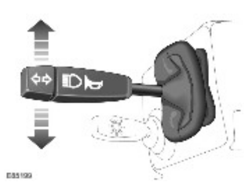
The turn signal indicator switch assembly is located in the Left Hand (LH) side of the case. The switch is connected to the main harness via a connector on the back of the switch. The switch controls the following functions:
The turn signal indicators are operated by pushing the switch up for Right Hand (RH) indicators and down for LH indicators. The switch has a detent position, which locks the switch in the selected position until it is moved to the central off position. The LH and RH turn signal indicator switch positions are connected on separate wires to the hazard warning relay, via the hazard warning switch. When a switch position selection is made, a circuit is completed from the hazard warning relay to ground, via the selected switch position. The hazard warning relay detects the completed circuit and operates the selected turn signal indicator until the switch is moved to the central off position. The turn signal indicators can be cancelled either manually by the driver or automatically when the steering wheel is rotated to the straight ahead position.
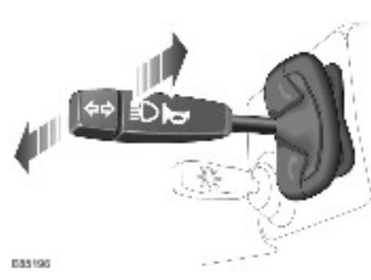
High beam is operated by pushing the switch forwards. The switch is latched in this position and the high beam is active until the switch is manually pulled rearwards. The headlamp flash function is operated by pulling the switch rearwards. The switch contacts complete a circuit and the headlamps are activated for as long as the switch is operated. The switch is non-latching in this position and the headlamp flash is switched off when the switch is released and it returns to its off position. The high beam and headlamp flash positions are connected on separate wires to the high/low beam relay and ground. When a switch selection is made, a circuit is completed from the high/low beam relay to ground via the switch contacts.
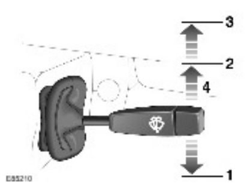
| Item | Part Number | Description |
|---|---|---|
| 1 | Intermittent wipe | |
| 2 | Low speed wipe | |
| 3 | High speed wipe | |
| 4 | Single wipe |
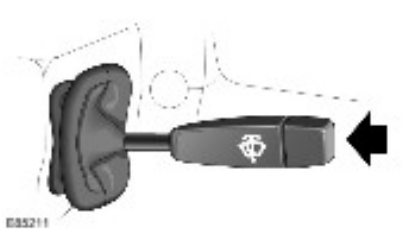
The windshield wiper functions are operated by moving the switch up or down. Flick wipe is selected by pushing the switch up against the spring pressure. The flick wipe switch contact is connected on a single wire to the windshield wiper delay Electronic Control Unit (ECU) and ground. When the switch is operated the circuit is completed between the delay ECU and ground. With the circuit completed the wipers operate for as long as the switch contact is made.
Intermittent is selected by pushing the wiper switch down, to the detent position, the wipers operate at a delay period, which is controlled by the windshield wiper delay ECU. The wipers remain in the intermittent mode until the wiper switch is moved to the off or slow/fast speed positions. The intermittent switch contact is connected between the delay ECU and ground. When the switch is moved to the intermittent position the circuit is completed. With the circuit completed, the wipers operate in intermittent for as long as the switch contact is made.
Slow speed operation is selected by pushing the wiper switch up, to the second detent position. The wipers operate at slow speed until the wiper switch is moved to the off, intermittent or fast speed positions. The slow speed switch contact is connected between the delay ECU and ground. When the switch is moved to the slow speed position the circuit is completed. With the circuit completed, the wipers operate at slow speed for as long as the switch contact is made.
Fast speed operation is selected by pushing the wiper switch up, to the second detent position. The wipers operate at fast speed until the wiper switch is moved to the off, intermittent or slow speed positions. The fast speed switch contact is connected between the delay ECU and ground. When the switch is moved to the fast speed position the circuit is completed. With the circuit completed, the wipers operate at fast speed for as long as the switch contact is made.
The windshield washers are operated by pressing the button on the end of the wash/wipe stalk located on the RH side of the steering column. When the button is pressed, the washers operate immediately and stop immediately the button is released. The washer button contact is connected between the delay ECU and ground. When the button is pressed the circuit is completed. With the circuit completed, the washers operate for as long as the contact is made.
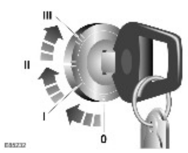
The ignition switch is located in the LH end of the steering column assembly. The switch is held in the column lock casting with 2 locking tabs, which engage in slots in the column lock casting.
The switch has a slot, which provides for the location of the drive shaft. The drive shaft passes through the column lock. This shaft is rotated by the driver when the ignition key is turned in the key barrel. This rotation turns a drum inside the ignition switch, which moves 2 electrical contacts to select the required ignition position. A spring loaded ball locates in a seat for each of the 3 ignition switch positions, allowing the driver to feel when the required position is reached.
Published: Feb 14, 2007
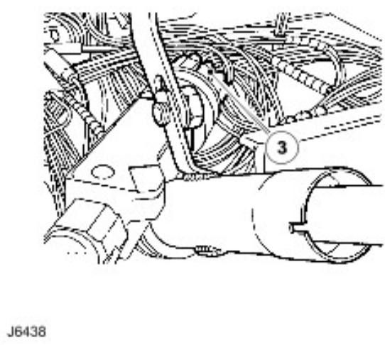
Published: Jan 29, 2007
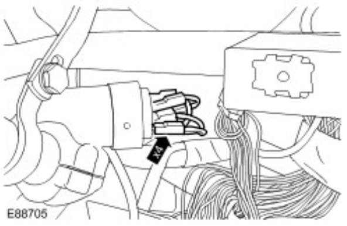
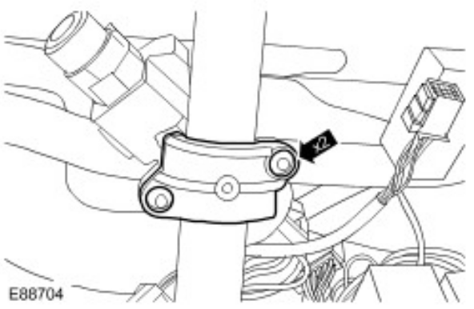
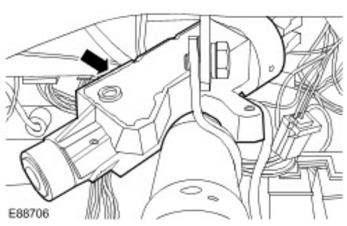
Remove the ignition switch.
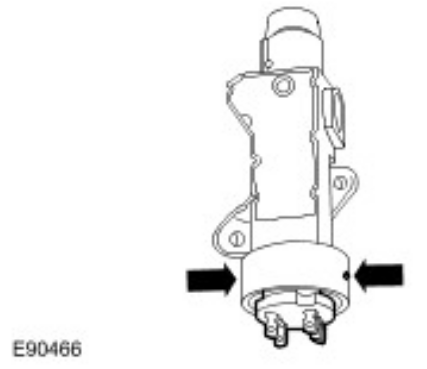
Published: May 26, 2006
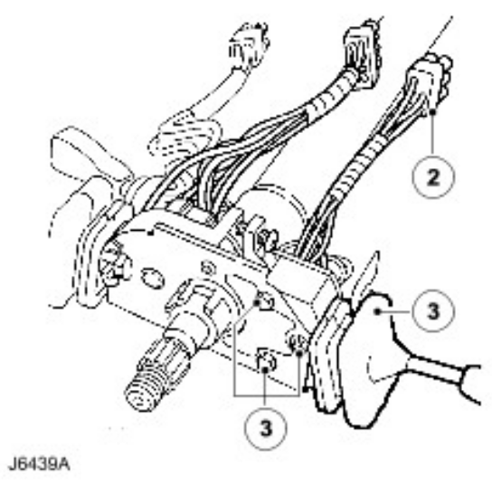
Published: Jan 23, 2007
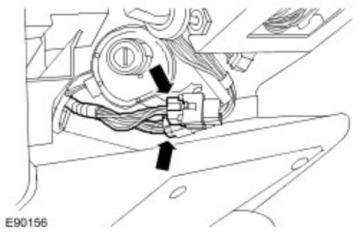
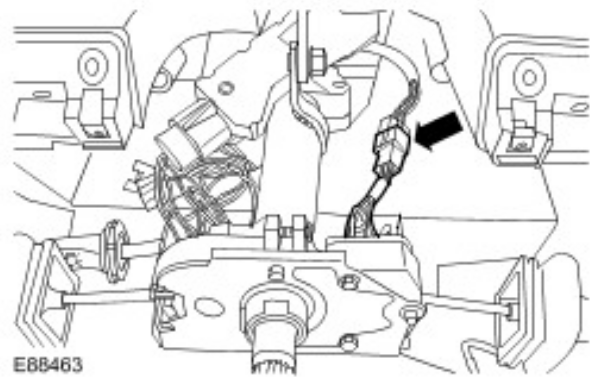
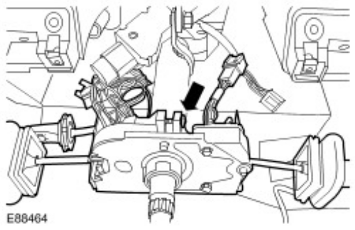